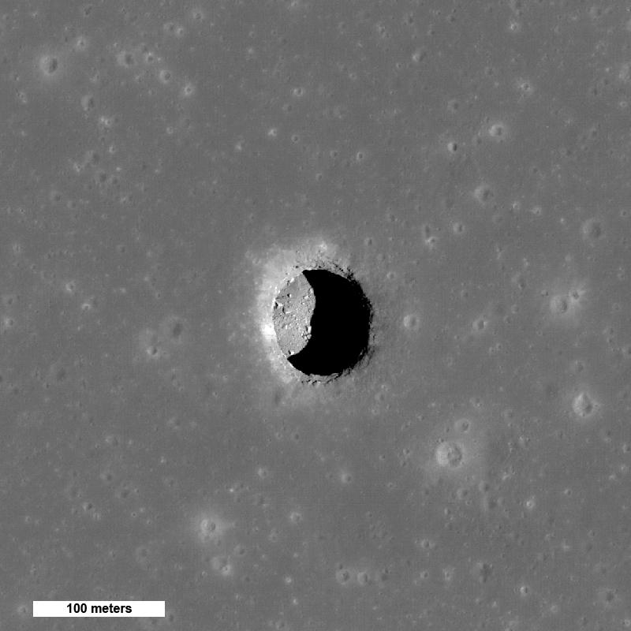

Loading Geant4 geometry…
0 %
Serve this folder over HTTP/HTTPS so the WRL file can load.
e.g. python3 -m http.server 8080 then open on Quest 3 browser.
// LOCATION INFO

Example image: Mare Tranquillitatis pit — Wikipedia / NASA / LROC